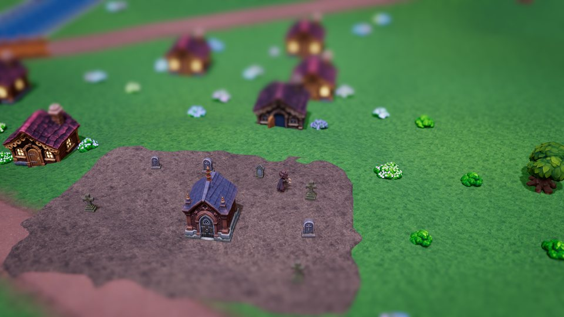
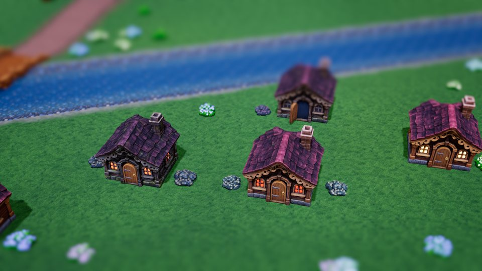
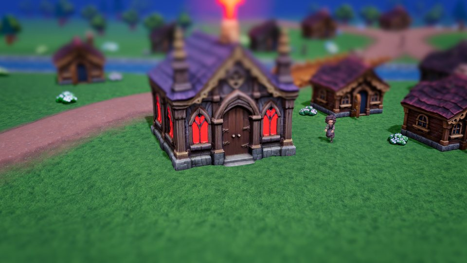

Knock, knock.
You feed.
Knock, knock.
A new town every game. Curse it, one house at a time.

W A S D move · E knock or enter · hold Space to hurry time · P pause · R restart · M mute · F full screen · H help · Esc settings · drag to turn the view, wheel to zoom



